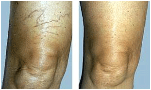
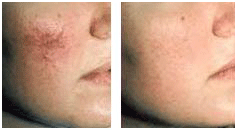
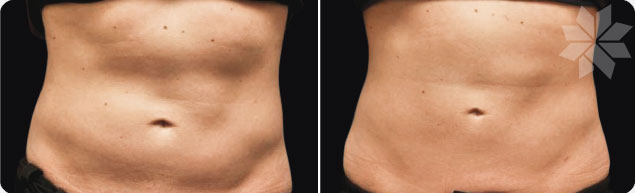
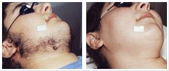
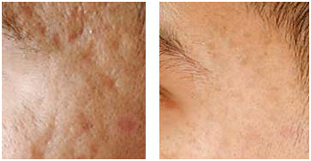
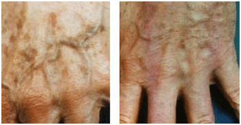
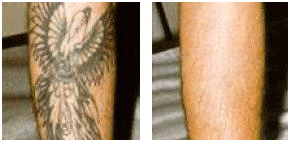

You’ve probably wondered what, if anything, can be done about your skin imperfections, especially those in prominent places that compromise your appearance in public. You don’t have to wonder anymore! Now we can remove most skin imperfections with the use of the latest breakthroughs in laser technology. Best of all, these breakthroughs allow our procedures to be simultaneously simple and effective.
This laser works by emitting an intense burst of light that targets the blood cells in the veins. It is gentle enough that the skin is not hurt or damaged. An average treatment lasts between 15 and 30 minutes. Veins fade with several treatments depending on their size and location.
Typically, this laser is used to remove spider veins on the face, port-wine-stain birthmarks and cherry angiomas on the chest and back. This laser works by targeting the red blood cells beneath the surface and leaves the skin intact. An average treatment lasts 15 minutes. Most lesions will fade away with one treatment. However, this varies from one person to another.
TruSculpt targets fat cells alone, eliminating them in an easy, non-intrusive fashion that exercise and diet can’t achieve as quickly or as effectively. Learn more
Traditional hair-removal techniques, including shaving, plucking and waxing, provide only temporary relief. Until now, the only semi-permanent way to remove hair has been by electrolysis, which can be painful, time-consuming and is limited to small cosmetic areas. The laser used for hair removal safely removes unwanted hair without damaging the delicate pores and structures of the skin. Facial, underarm and bikini areas are usually completed in less than 10 minutes. Legs, back and larger areas can take longer. It usually takes between four and six treatments to achieve final results.
Fraxel® treatment is able to precisely treat thousands of microscopic areas of skin, using pinpoint laser beams that penetrate the skin to eliminate old, damaged skin cells. The laser stimulates the body’s natural healing processes. This replaces damaged skin with fresh, healthy skin. The treatment’s results include smoother, fresher-looking skin, improved tone and texture, reduced fine lines and wrinkles, and reduction of acne scars, surgical scars and brown spots. Downtime ranges from none to minimal!
Typically, this laser is used to remove age and liver spots. It targets the brown cells and leaves the normal skin intact. An average treatment lasts 15 minutes. Most lesions fade away with one treatment. However, this varies from one patient to another.
This laser is used to remove professional and amateur tattoos. Tattoos inscribed as landmarks for radiation therapy are easily removed as well. Most colors are clearable, but some colors do fade at a slower rate than others. This laser works by targeting the ink pigment beneath the surface, while it leaves the normal skin intact. An average treatment lasts 15 minutes. Most tattoos require multiple treatments for complete fading.
This painless laser treatment gently enhances collagen production in your skin, resulting in a reduction of fine wrinkles. It also improves texture and reduces spider veins and brown spots. There is no downtime, and makeup may be applied immediately.